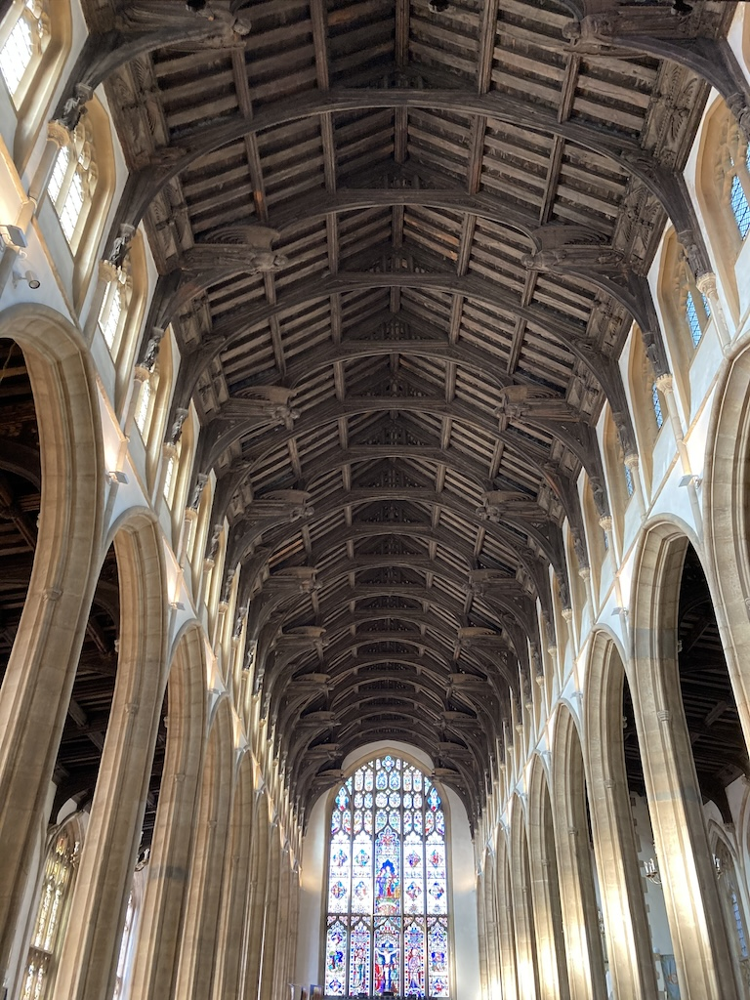

Bury St Edmunds and Sudbury are about twenty miles apart and have two things in common. Firstly they are both in Suffolk and secondly we have met up with our friends Kate and Dick in both locations for a few days, albeit a year apart.
In September 2023 we went to Bury St Edmunds for a few days and then repeated the exercise, this time to Sudbury in September 2024.
Bury St Edmunds
On Wednesday 13th September 2023 we set off for Bury St Edmund, stopping for lunch at a National Trust nature reserve near Stansted Airport, called Hatfield Forest. This 'shelter' was covered in shells.
We arrived at the hotel (a Premier Inn) mid-afternoon, Kate and Dick arriving just a little later. The four of us walked to the Cathedral cafe for a cup of tea and then took a walk along the main eatery street. We decided on a Thai restaurant called the Giggly Squid. I remembered why I am not that keen on Thai food.
On Thursday we had showered, had breakfast and done our Dutch lessons before Kate and Dick knocked on our bedroom door at ten o'clock. We went to the tourist information shop and bought tickets for a guided tour of the cathedral, only to find that it had been cancelled due to a service. So Dick got his money back. Prior to the expected tour we walked to the theatre, only to find that they were running workshops and so we couldn't go in to look around!
So we had a long coffee break in the cathedral cafe and then walked around some back streets in Bury, returning to the cafe for lunch, which again took some time. So much so that we missed the opening time of St Mary's church, which is said to have an interesting roof structure. We did, however, have ice cream in the cathedral gardens walk around the inside of the cathedral. You can see here a view into the tower and also a lego model of the cathedral.
Later we walked into the restaurant street and had pizza. Another fine day.
On Friday it was the same procedure as the day before. We went down for breakfast and then waited in our room, doing our Dutch lessons, until Kate and Dick knocked at around ten.
It was another fine day, so we walked to the pub around the corner to book a table for dinner that evening and then went into St Mary's church. It is bigger than the cathedral and apparently the largest parish church in the UK. Mary Tudor is buried there and it has a magnificent hammer beam roof.
Then we drove off to Ikworth House, only a few miles to the south. We had both morning tea and lunch there, looking around the house (a rotunda with a wing either side) and walking a little around the grounds in between. We were back at the hotel by four.
Our meal at the Dog & Partridge was not quite as we had expected. We all wanted fish & chips, but they only had two portions left. So Kate and I had steak and ale pie. We couldn't eat it all. Also, the pub was a bit too noisy for us to easily hold a conversation.
The photos below show the rotunda at Ikworth House and Angela, Kate and Dick looking at that view.

Sudbury
On Tuesday 3rd September 2024 we left home at 11 o'clock and arrived at the hotel in Sudbury (after a few wrong turns) at about three o'clock. As we got out of the car so Kate pulled into the car park!
We checked in to find that Angela and I were in the 'cottage', which is separate from the main hotel and in the car park. The hotel is full with a coach party (so breakfasts were chaotic and dinners were noisy). We met up for a cup of tea on the terrace and then met again later for dinner.
Wednesday was all about exploring Sudbury. In the aerial view of the town you can see the Mill Hotel on the left, with the market square (essentially the town centre) to the right, where cars are parked. Angela and I walked around part of the meadow before breakfast and then we met up with Kate and Dick to walk into the town centre. Dick is very slow. The town is spoilt by the heavy traffic that runs through it, particularly with some very narrow pavements. We had coffee in the arts centre (in an old church on the market square) and then lunch in the Gainsborough House museum. The museum itself was quite interesting, although there were a lot of paintings by a more modern pair of local artists, that were not to our taste. Some of Gainsborough's paintings, particularly the portraits, were very good. We had dinner again in the hotel restaurant since the food was good and it was too far to walk to/from the other restaurants, particularly in the dark.
After breakfast on Thursday, Angela and I walked into Sudbury centre to look at the weekly market. It was quite small, however, we looked at other streets in the centre and walked back along a different route, including a small lane.
Then we all set off to Lavenham Guildhall, run by the National Trust. It was interesting and we had a fire evacuation drill while we were upstairs. Lavenham itself has many timber-framed buildings. We then went on to Melford Manor house. We started with lunch and then toured the house and garden. We were back at the hotel by about four.
We met up with Kate and Dick in the bar to look at family photos. Then we went into the restaurant. We were the last to leave at 9:30.
On Friday we left Sudbury and headed further east to visit Tony and Jill. We travelled the whole of the one and a half hour journey on B roads, only making one wrong turn. We left Snape a little after 2:30 and followed the A12 all the way to the M25, arriving home at six o'clock. Our only stop was for a short comfort break at Clacket Lane services. Luckily, all the traffic queues were on the other side of the road.